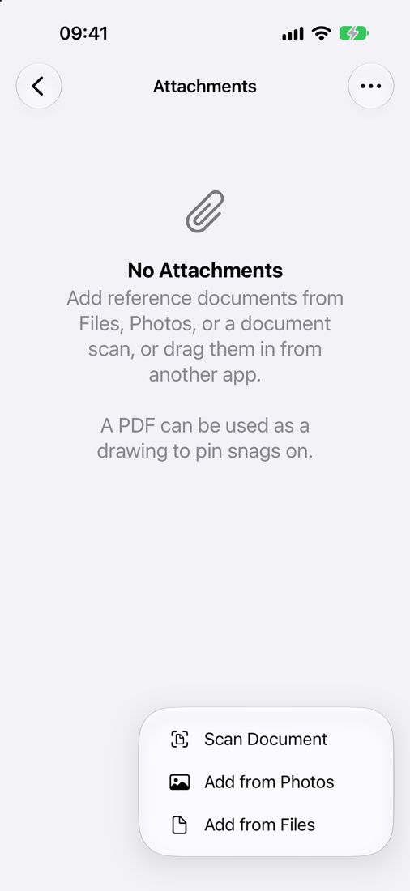
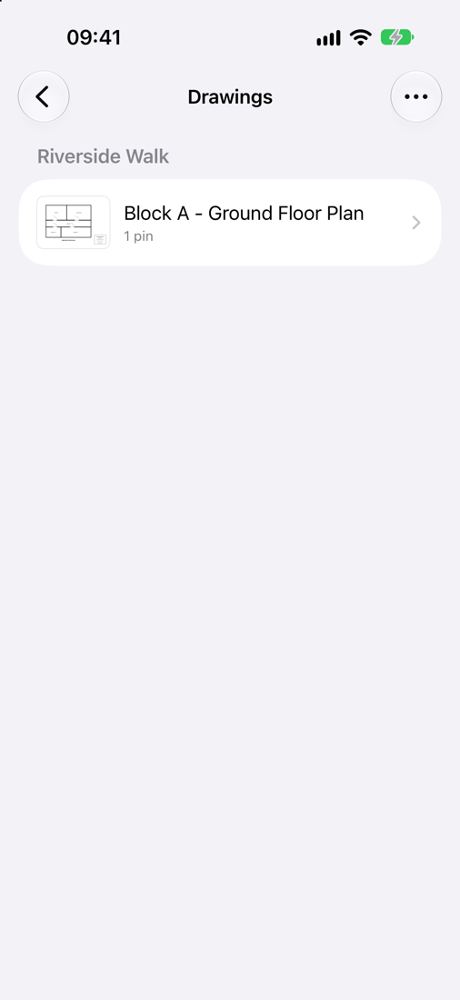
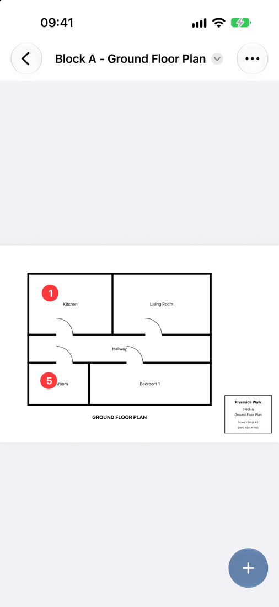
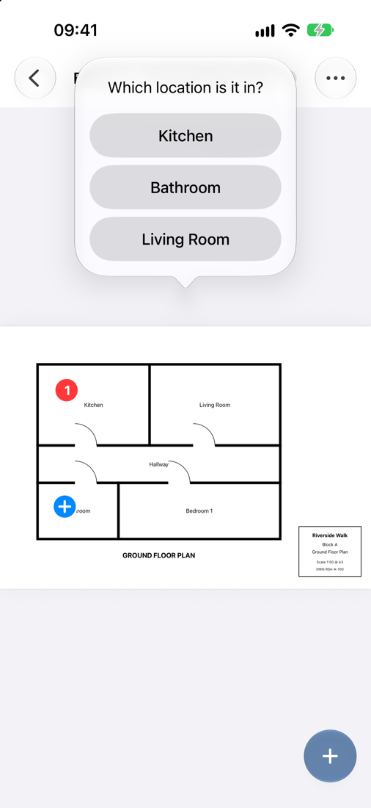
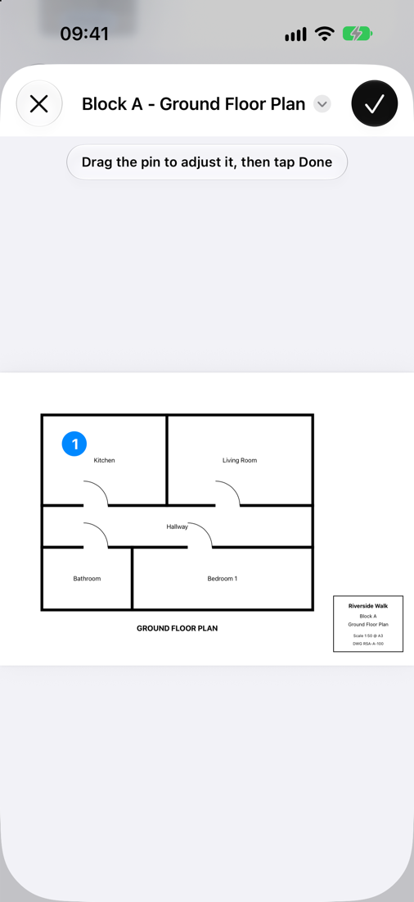
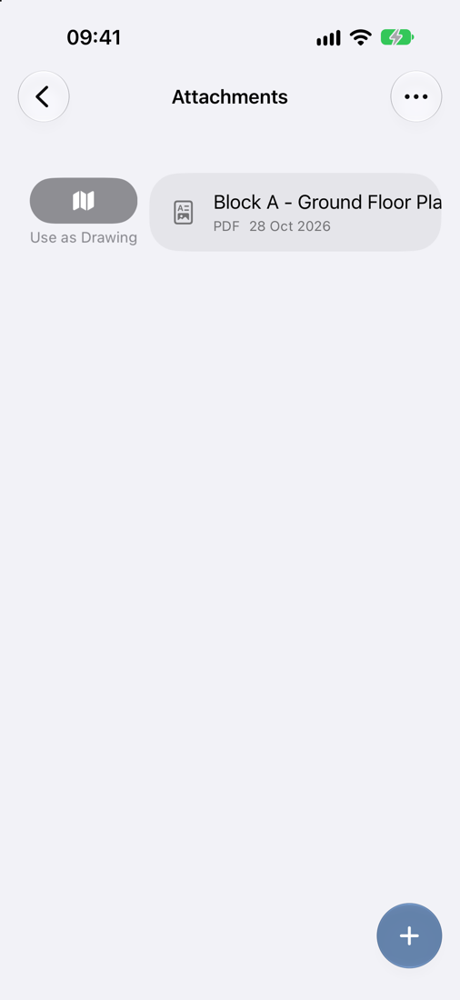

Attachments and Drawings NEW IN 1.1
Keep plans, specifications and other reference documents with your inspection, mark them up, and pin each snag to its exact spot on a drawing.
Attachments
Attachments can be added at two levels:
- Site attachments – from the Units screen, tap ⋯ → Attachments. Use these for documents that apply to the whole site.
- Unit attachments – tap Attachments at the top of a unit’s locations.
Tap + to add:
- Add from Files – PDFs and images from Files, iCloud Drive or other storage
- Add from Photos – images from your photo library
- Scan Document – scan paper documents with the camera
You can also drag images and PDFs in from another app.

In the attachments list:
- tap an attachment to open it
- press and hold for Open, Share, Rename and Delete
- swipe right on a PDF to Use as Drawing
- use ⋯ to sort, or to select several attachments and share or delete them together
Marking up PDFs and images
Open an attachment to mark it up. Images use the same editor as snag photos (see Photos and Markup). PDFs have three tools:
- Ink – draw freehand. Hold still at the end of a stroke to snap it into a shape.
- Highlight – highlight by hand.
- Text – tap the page to place a short label, such as a measurement. Drag it to move it, or tap it to edit, resize or delete it.
Your markup stays editable after you save. Use ⋯ → Remove All Markup to clear everything you added in Snaglite. Markup that came with the original PDF is not affected.
Drawings
A drawing is a PDF plan you can pin snags on. To turn a PDF into a drawing, swipe right on it in Attachments and tap Use as Drawing. You can also drop a PDF straight onto the Drawings screen.
Open Drawings from the top of a unit’s locations. The list shows:
- This Unit – drawings attached to the unit
- Site drawings – drawings attached to the site, shown on every unit
If a site has different house types, use ⋯ → Choose Site Drawings… on a unit to pick only the drawings that apply to it. Units with nothing chosen show every site drawing. ⋯ → Edit Order changes the order of site drawings.

Multi-page drawings
Each page of a PDF is a sheet. Use the arrow next to the drawing name to switch sheets. In the Drawings list, press and hold a sheet to Rename Sheet (for example “Ground Floor” or “Rear Elevation”), Rotate it, delete a single sheet, or delete the whole drawing.
Pinning snags on drawings
There are two ways to pin a snag.
Start from the drawing
- Open the drawing and tap +.
- Tap the drawing where the snag is.
- Choose the location.
- Fill in the New Snag form and save.
Start from the snag
- Open the snag and tap Pin on Drawing…
- Tap the drawing to place the pin. Drag it to adjust.
- Tap the tick.
Pins use the same numbers as the snag list and the report. Open a snag to Move Pin or Remove Pin.




Drawings in reports
When Drawings is turned on in Export Report, the report includes a page for each sheet that has pinned snags. Crowded pins are fanned out so every number stays readable. Very detailed drawings are simplified so the report stays small enough to email. See Reports and Export.